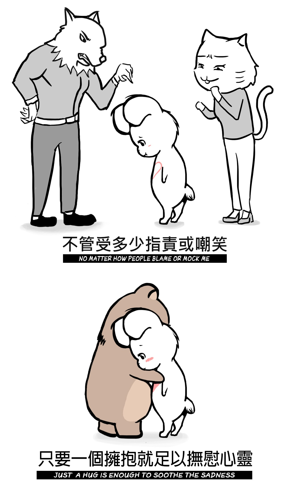
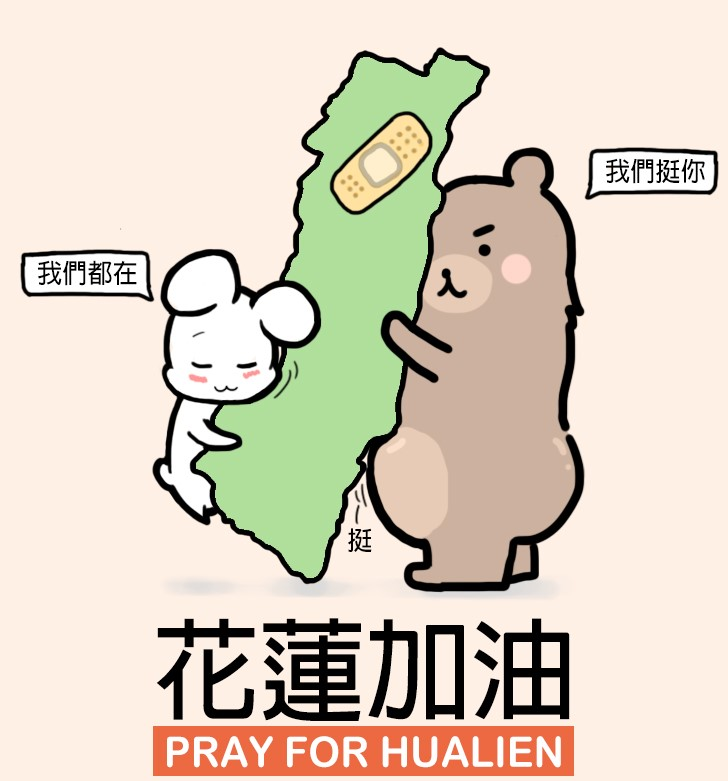

插畫創作
2017 - 2018
創作說明
繪畫及敘事是我所熱衷的事，從小受宮崎駿動畫的感動，我覺得能夠用創作來感動或啟發他人是一件很幸福的事。
希望透過不間斷的創作，為他人帶來正向的力量，用自己小小的才能，為社會帶來一些些正向的貢獻。
創作工具
Photoshop, Illustrator
任憑千夫指，我心為我知
這幅插畫是參考坂本龍馬的相片繪製而成，以坂本龍馬的名言為題，來勉勵所有在夢想路上孜孜不倦、專注學習、堅持目標的人。

兔與熊
這兩隻兔子和熊，是我閒暇之餘用插畫紀錄日常生活點滴的角色。

擁抱
生活中有許多不如意的事，總使人意志消沉，但只消一個溫暖的擁抱，便能讓人再度打起精神，再度迎向新的挑戰。希望透過這幅插畫傳達關愛與支持所具有的意義以及如何在生活中體現。

花蓮震災
2018/2/6花蓮地震，台灣社會充斥著不安與不捨。身為花蓮人的我，也想為故鄉盡一點心力，於是畫了這幅畫，盡可能地貼在花蓮人的社群裡，為花蓮的鄉親及受災戶打氣，也希望透過溫暖的畫面，減緩當時不安的氛圍。
日常點滴插畫
描繪情侶對彼此味道依戀的逗趣小片段。
日常點滴插畫
減肥是困難的事，尤其是小胖熊，有天他竟然默默開始減肥，實在令人吃驚。
日常點滴插畫
描繪過度認真的男友以及女友不忍吐槽的無奈